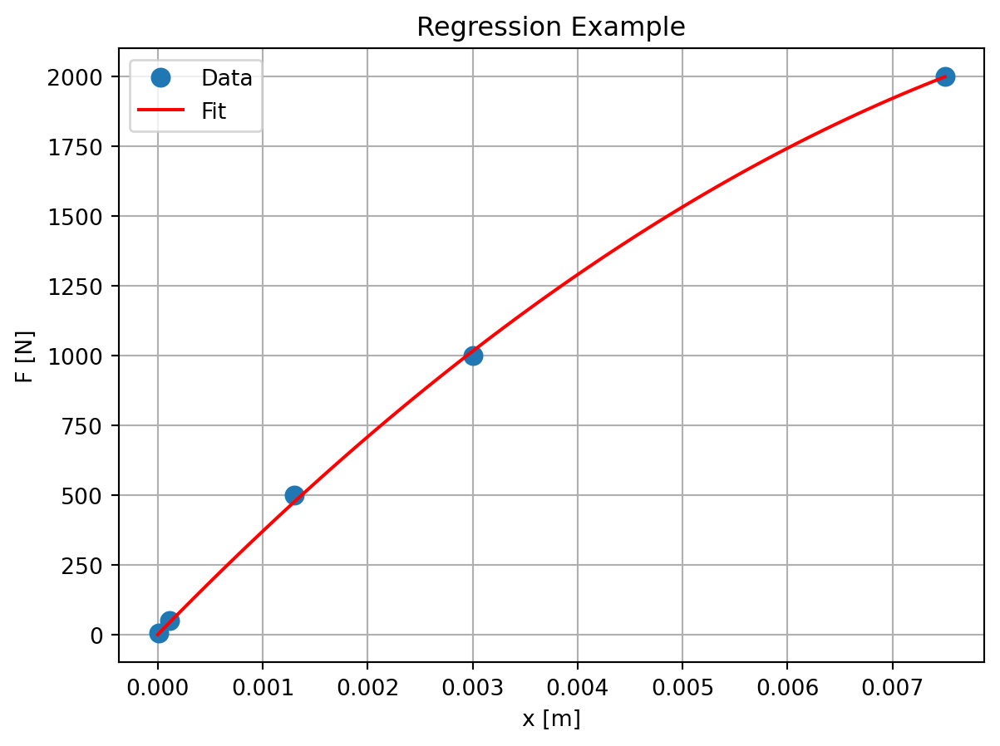
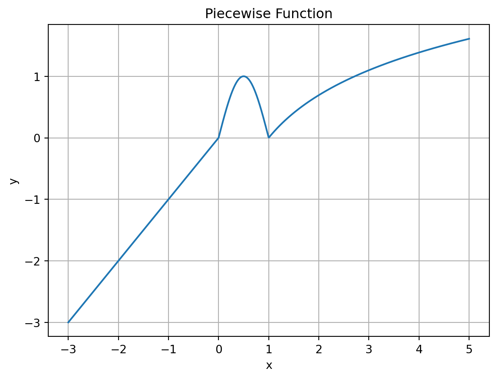
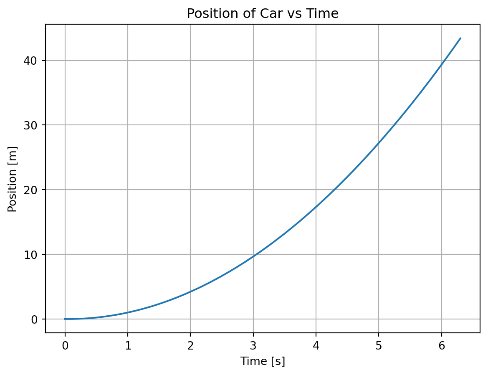
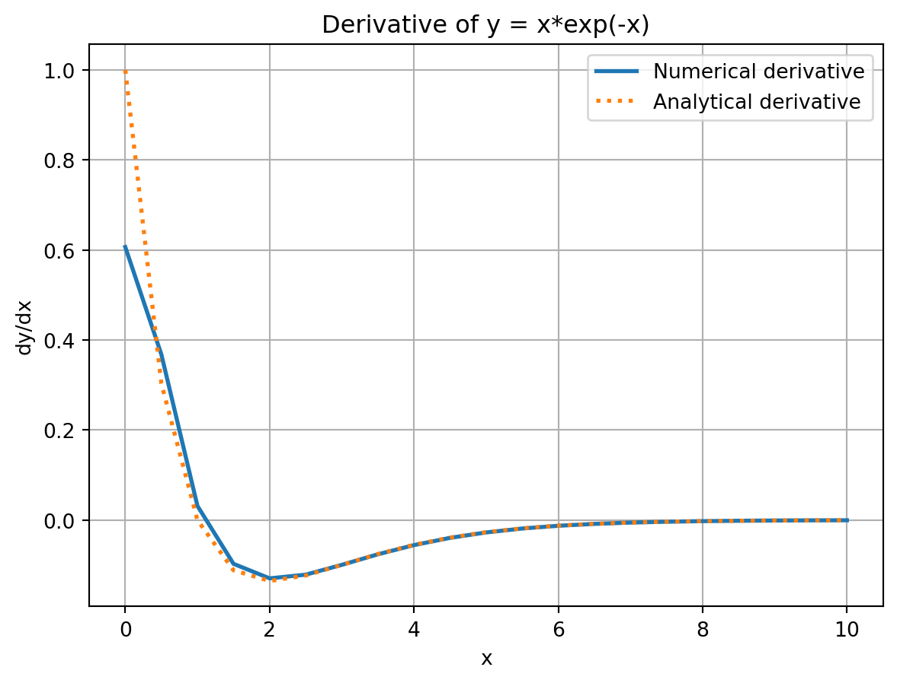

"""
Scientific Computing with Python
Based on Prof. Joseph Morlier's MATLAB course
Translated to Python using NumPy, SciPy, and Matplotlib
"""
import numpy as np
import matplotlib.pyplot as plt
from scipy.optimize import fminbound, minimize
from scipy.integrate import quad, dblquad
import numpy as npExercice 1.7
Scientific Computing with Python
- Summary
- Defining scalar variables
- Vector operations
- Matrices operation
- For Loop
- More programming
- Optimization BONUS : Numerical integration in 2D
1.Defining scalar variables
# ============================================================================
# 1. DEFINING SCALAR VARIABLES
# ============================================================================
print("=== 1. Scalar Variables ===")
# Python can be used as a calculator. No semicolon needed.
# Variables are automatically stored.
x = 5
y = 3
z = x + y
print(f"x = {x}, y = {y}, z = {z}")=== 1. Scalar Variables ===
x = 5, y = 3, z = 82.Vector operations (a)
Commands: linspace (x0, x1, N)
Create an array of N equally spaced values between x0 and x1 x0 : Δx : x1 Create an array of values between x0 and x1 spaced by Δx
Create the vector [1 2 3 ]. Visualize the elements. Change the third element to 4 and display the new vector on the screen.
Vector operation (b)
Commands : .* ./ .^ element by element algebraic operations Define two vectors x = [1 -2 5 3] and y = [4 1 0 -1]. Multiply x and y element by element.
Compute the squares of the elements of x. Create the vector [1 2 3 ]. Visualize the elements. Change the third element to 4 and display the new vector on the screen.
# ============================================================================
# 2. VECTOR OPERATIONS
# ============================================================================
print("\n=== 2. Vector Operations ===")
# Create a vector [1 2 3]
V = np.array([1, 2, 3])
print(f"V = {V}")
print(f"V[0] = {V[0]}")
print(f"V[1] = {V[1]}")
print(f"V[2] = {V[2]}")
x_prod = V[0] * V[1]
V[2] = 4
print(f"Modified V = {V}")
# Element-wise operations
x = np.array([1, -2, 5, 3])
y = np.array([4, 1, 0, -1])
z = x * y # Element-wise multiplication
print(f"\nElement-wise multiplication: {z}")
print(f"Squares of x: {x**2}")
=== 2. Vector Operations ===
V = [1 2 3]
V[0] = 1
V[1] = 2
V[2] = 3
Modified V = [1 2 4]
Element-wise multiplication: [ 4 -2 0 -3]
Squares of x: [ 1 4 25 9]- Matrices operation (a)
commands: @ Matrix multiplier operator size : Returns the size of a vector or matrix.
round : Returns integer value(s) of the argument
Multiply two matrices \(A=\left[\begin{array}{rr}1 & 2 \\ -1 & 3\end{array}\right]\) and \(B=\left[\begin{array}{lll}1 & 0 & 1 \\ 2 & 1 & 0\end{array}\right]\)
Determine the size of the resulting matrix.
# ============================================================================
# 3. MATRICES OPERATIONS
# ============================================================================
print("\n=== 3. Matrix Operations ===")
# Matrix multiplication
A = np.array([[1, 2], [-1, 3]])
B = np.array([[1, 0, 1], [2, 1, 0]])
C = A @ B # Matrix multiplication
print(f"A @ B =\n{C}")
print(f"Size of C: {C.shape}")
print(f"C[1, 0] = {C[1, 0]}")
=== 3. Matrix Operations ===
A @ B =
[[ 5 2 1]
[ 5 3 -1]]
Size of C: (2, 3)
C[1, 0] = 53.Matrices operation (b)
Gaussian Elimination
commands: rank : Returns the rank of a matrix np.linalg.rank()
inv : Returns the inverse of a matrix (squared) np.linalg.inv() pinv: Returns the inverse of a matrix (rectangular) numpy.linalg.pinv
Find the rank and solution (if it exists) to the following system of equations: \(\begin{aligned} & 7 y+3 z=-12 \\ & 2 x+8 y+z=0 \\ & -5 x+2 y-9 z=26\end{aligned}\)
# Matrix rank and reduced row echelon form
Ab = np.array([[0, 7, 3, -12],
[2, 8, 1, 0],
[-5, 2, -9, 26]])
print(f"\nRank of augmented matrix: {np.linalg.matrix_rank(Ab)}")
A = np.array([[0, 7, 3],
[2, 8, 1],
[-5, 2, -9]], dtype=float)
b = np.array([-12, 0, 26], dtype=float)
# Solve using matrix inverse
x_inv = np.linalg.inv(A) @ b
print(f"Solution via inverse: {x_inv}")
# Solve using least squares (more numerically stable)
x_ls = np.linalg.solve(A, b)
print(f"Solution via solve: {x_ls}")
Rank of augmented matrix: 3
Solution via inverse: [ 2. 0. -4.]
Solution via solve: [ 2. 0. -4.]3.Matrices operation (c) Regression Let’s take this example
\[\begin{equation} \begin{aligned} &\begin{array}{r|l} \hline \text { Force } F[\mathrm{~N}] & \text { Deformation } x[\mathrm{~cm}] \\ \hline 5 & 0.001 \\ 50 & 0.011 \\ 500 & 0.13 \\ 1000 & 0.30 \\ 2000 & 0.75 \\ \hline \end{array}\\ \end{aligned} \end{equation}\]
with the model given \(F=k_1 x+k_2 x^2\)
# Regression example
x_data = np.array([.001, .011, .13, .3, .75]) * 1e-2
A_reg = np.column_stack([x_data, x_data**2])
f = np.array([5, 50, 500, 1000, 2000], dtype=float)
k = np.linalg.lstsq(A_reg, f, rcond=None)[0]
plt.figure()
plt.plot(x_data, f, 'o', markersize=8, label='Data')
X = np.linspace(0, max(x_data), 100)
Y_fit = k[0] * X + k[1] * X**2
plt.plot(X, Y_fit, 'r-', label='Fit')
plt.xlabel('x [m]')
plt.ylabel('F [N]')
plt.legend()
plt.grid(True)
plt.title('Regression Example')
# plt.show()Text(0.5, 1.0, 'Regression Example')
- For Loop
command: for i in range(len(x)):
end Commands : plot Create a scatter/line plot in 1-D
title Add a title to the current figure xlabel, ylabel legend Add x and y labels to the current figure Add a legend to the current figure hold on / hold off Plot multiple curves in the same subplot figure Make several plots in the same window
Define the following piecewise function between x = -3 and x = 5 using 1000 points and plot it.
\[\begin{equation} \left\{\begin{array}{cc} y(x)=x & x<0 \\ y(x)=\sin \pi x & 0 \leq x \leq 1 \\ y(x)=\ln x & x>1 \end{array}\right. \end{equation}\]
# ============================================================================
# 4. FOR LOOPS AND CONDITIONALS
# ============================================================================
print("\n=== 4. For Loops ===")
x = np.linspace(-3, 5, 1000)
y = np.zeros_like(x)
for i in range(len(x)):
if x[i] < 0:
y[i] = x[i]
elif x[i] > 1:
y[i] = np.log(x[i])
else:
y[i] = np.sin(np.pi * x[i])
plt.figure()
plt.plot(x, y)
plt.title('Piecewise Function')
plt.xlabel('x')
plt.ylabel('y')
plt.grid(True)
# plt.show()
=== 4. For Loops ===
- More programming (a)
Integrate numerically: finite difference? Starting from rest, a car (mass = 900 kg) accelerates under the influence of a force of 2000 Newtons until it reaches 13.89 m/s (50 km/h). What is the distance traveled? How long does it take to travel this distance?
Newton’s law: \(m \frac{d v}{d t}=F\)
This equation determines the velocity of the car as a function of time. To obtain the position of the car, we use the following kinematic relation:
\[ \frac{d x}{d t}=v \]
Although this problem can be solved analytically, in this exercise we would like to come up with a numerical solution using PYTHON. We first need to discretize the equations, i.e. evaluate the position and velocity at equally spaced discrete points in time, since PYTHON doesn’t know how to interpret continuous functions. The solution for \(\mathrm{v}(\mathrm{t})\) and \(\mathrm{x}(\mathrm{t})\) will then be represented by vectors containing the values of the velocity and the position of the car respectively at these discrete points in time separated by delta_t .
The time derivative for the velocity in (1) can be approximated by:
\[ \frac{d v}{d t} \approx \frac{v(t+\Delta t)-v(t)}{\Delta t} \]
Equation (1) then becomes: \(\quad \frac{v(t+\Delta t)-v(t)}{\Delta t}=\frac{F}{m} \quad \Leftrightarrow \quad v(t+\Delta t)=v(t)+\Delta t \frac{F}{m}\)
or, if we solve for the velocity at step \(n+1: \quad v(n+1)=v(n)+\Delta t \frac{F}{m}\), where the unknown is \(v(n+1)\).
Similarly, equation (2) becomes: \(\frac{x(t+\Delta t)-x(t)}{\Delta t}=v(t) \Leftrightarrow x(t+\Delta t)=x(t)+\Delta t v(t)\) and the position at step \(n+1\) will given by: \(\quad x(n+1)=x(n)+\Delta t v(n)\) Solve the above equations for position and velocity and plot the position as a function of time. Display the distance traveled and the time it takes to reach \(50 \mathrm{~km} / \mathrm{h}\).
# ============================================================================
# 5. NUMERICAL INTEGRATION AND DERIVATIVES
# ============================================================================
print("\n=== 5. Kinematics Example ===")
# Car acceleration problem
F = 2000 # Force in Newtons
m = 900 # Mass in kg
deltat = 0.1 # Time step
t = [0]
v = [0]
x = [0]
n = 0
while v[n] < 13.89: # Until reaching 13.89 m/s (50 km/h)
t.append(t[n] + deltat)
v.append(v[n] + (F/m) * deltat)
x.append(x[n] + v[n] * deltat)
n += 1
plt.figure()
plt.plot(t, x)
plt.grid(True)
plt.title('Position of Car vs Time')
plt.xlabel('Time [s]')
plt.ylabel('Position [m]')
# plt.show()
print(f"Final position: {x[-1]:.2f} m")
print(f"Time to reach 50 km/h: {t[-1]:.2f} s")
=== 5. Kinematics Example ===
Final position: 43.40 m
Time to reach 50 km/h: 6.30 s
- More programming (b) Commands : gradient Computes the numerical derivative of a function
Find the derivative of the following function: y = xexp(-x) for x ranging between 0 and 10, with an increment of 0.5. Plot both the analytical and the numerical derivatives in the same figure.
# Numerical derivatives
print("\n=== Numerical Derivatives ===")
x_deriv = np.arange(0, 10.5, 0.5)
y_deriv = x_deriv * np.exp(-x_deriv)
derY = np.gradient(y_deriv, 0.5) # Numerical derivative
derYex = (1 - x_deriv) * np.exp(-x_deriv) # Analytical derivative
plt.figure()
plt.plot(x_deriv, derY, '-', linewidth=2, label='Numerical derivative')
plt.plot(x_deriv, derYex, ':', linewidth=2, label='Analytical derivative')
plt.grid(True)
plt.title('Derivative of y = x*exp(-x)')
plt.xlabel('x')
plt.ylabel('dy/dx')
plt.legend()
# plt.show()
=== Numerical Derivatives ===
- Optimization (a) Command : fminbound find a local minimum of a functional or minimize (more general)
For functions of a single variable: find the minimum of the function
first analytically \[\begin{equation} f^{\prime}(x)=e^{-2 x}(2 x-1)=0 \quad \Rightarrow \quad x=\frac{1}{2} \end{equation}\]
and then numerically using the fminsearch command.
# ============================================================================
# 6. OPTIMIZATION
# ============================================================================
print("\n=== Optimization ===")
# Single variable: minimize f(x) = 1 - x*exp(-2*x)
result1 = fminbound(lambda x: 1 - x*np.exp(-2*x), 0, 10)
print(f"Minimum of f(x) = 1 - x*exp(-2x): x = {result1:.4f}")
=== Optimization ===
Minimum of f(x) = 1 - x*exp(-2x): x = 0.50006.Optimization (b) For functions of several variables: find the minimum of the function f (x, y)= cos(xy)sin(x) over the domain using the fminsearch command. Follow these steps: - plot the function over the given domain to approximately locate the minimum. - use these approximate values of the coordinates as your initial guess Hint: The syntax for functions of several variables is slightly different. Define X = [x y]. Then in PYTHON , x and y will be represented by the two components: X (1)= x and X (2)= y , and the command becomes:
# Multiple variables: minimize f(x,y) = cos(xy)*sin(x)
result2 = minimize(lambda X: np.cos(X[0]*X[1])*np.sin(X[0]),
x0=[1.5, 2], method='Nelder-Mead')
print(f"Minimum of f(x,y) = cos(xy)*sin(x): {result2.x}")Minimum of f(x,y) = cos(xy)*sin(x): [1.5708235 1.99997996]- Numerical integration in 2D (a)
trapz Computes the integral of a function over a given domain using the trapezoidal method Compute the integral of the function f (x) = x^2 + x +1 for 0< x <1 using the trapezoidal method. Compare the result to the exact analytical solution (Analytical result : I = 11/6 = 1.8333) quad Computes the integral of a function over a given domain using Gaussian quadrature (Numerically evaluate integral, adaptive Simpson quadrature)
# ============================================================================
# 7. NUMERICAL INTEGRATION
# ============================================================================
print("\n=== Numerical Integration ===")
# 1D Integration: f(x) = x^2 + x + 1 from 0 to 1
x_int = np.linspace(0, 1, 100)
y_int = x_int**2 + x_int + 1
I_trapz = np.trapz(y_int, x_int)
I_quad, _ = quad(lambda x: x**2 + x + 1, 0, 1)
print(f"Trapezoidal rule: {I_trapz:.6f}")
print(f"Gaussian quadrature: {I_quad:.6f}")
print(f"Analytical result: {11/6:.6f}")
=== Numerical Integration ===
Trapezoidal rule: 1.833350
Gaussian quadrature: 1.833333
Analytical result: 1.833333- Numerical integration in 2D (a) If you know explicitly the integrand use Gaussian quadrature (see course, why using polynomes)
Q = QUAD(FUN,A,B) tries to approximate the integral of scalar-valued function FUN from A to B to within an erro of 1.e-6 using recursive adaptive Simpson quadrature.
Suppose we wish to integrate (double) \[\begin{equation} \int_1^2 \int_0^3 x^2 y d x d y \end{equation}\]
# 2D Integration: double integral of x^2*y from x=[0,3], y=[1,2]
result_2d, _ = dblquad(lambda y, x: x**2 * y, 0, 3, 1, 2)
print(f"\nDouble integral result: {result_2d:.6f}")
Double integral result: 13.500000